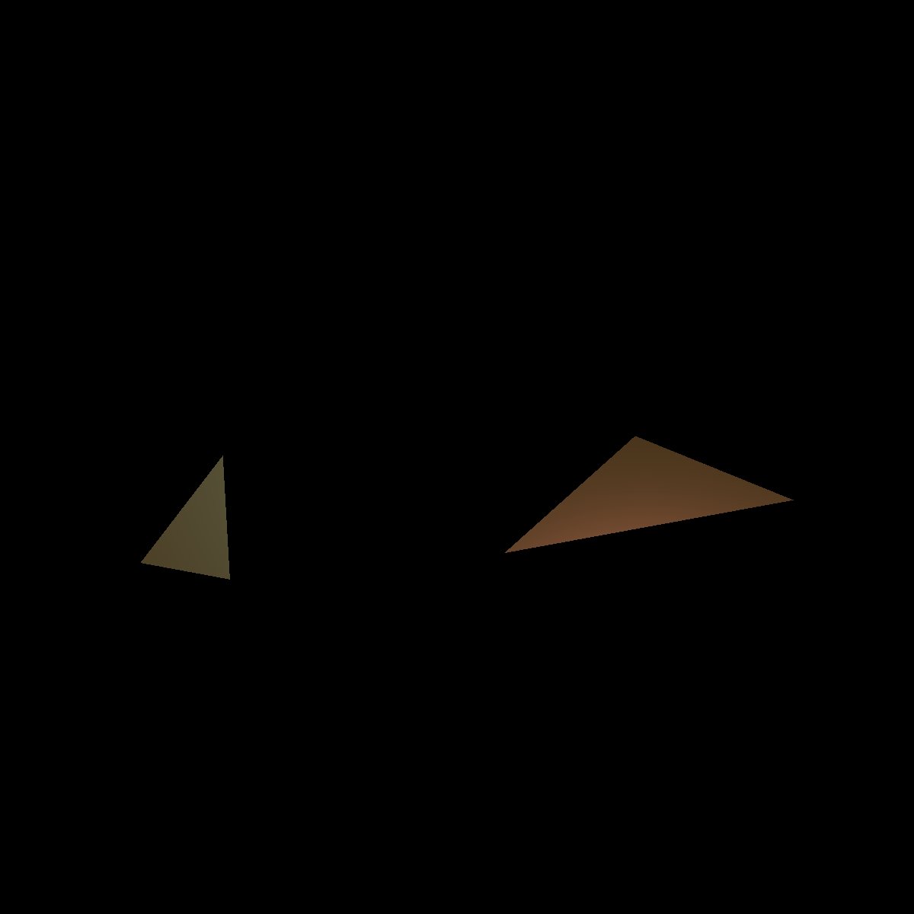

This is my assignment 2, which follows the spec and is also able to write to pngs. Assignment 2 is a raytrader which implements the Phong Illumination Model to shade spheres, triangles, and arbitrary objects defined by obj files. the input is controlled by a text file argument.
./raytrace image-02.txt image-02.png
A more complicated image, with two spheres, which shadow and reflect one another.
./raytrace image-02.txt image-02.png
A more complicated image, with two spheres, which shadow and reflect one another.
./raytrace image-03.txt image-03.png
This image has ellipsoids created using scale, translate, and rotation transformations, was well as shadowing.
./raytrace image-05.txt image-05.png
Image has triangles, with shading.
